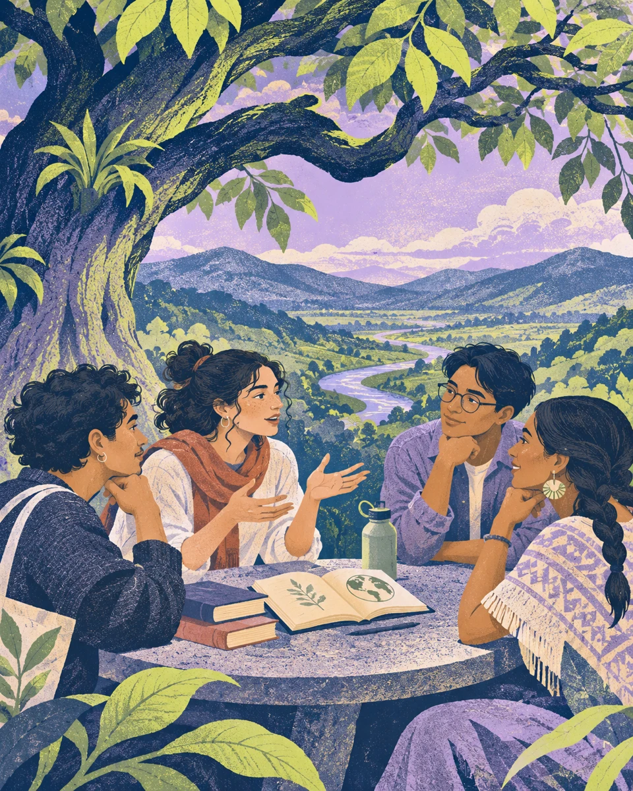
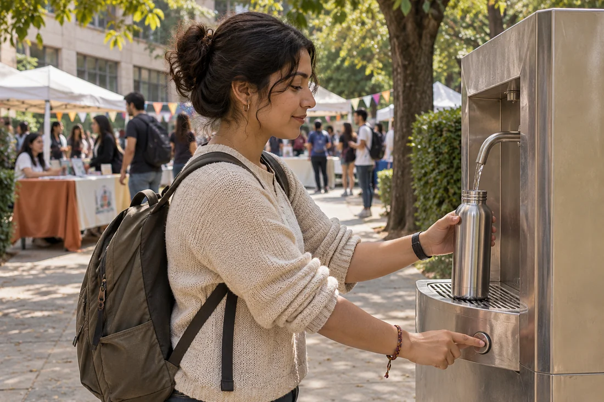

Tema 13

Diálogo e interdependencia
¿Cómo acordamos algo cuando todos dependemos del trabajo de los demás?
Leer artículo
Tema 13
¿Cómo acordamos algo cuando todos dependemos del trabajo de los demás?
Leer artículoTema 14
Comprobar lo que entendimos puede cambiar la forma de resolver un desacuerdo.
Leer artículoTema 14

Aceptación, valoración y empatía ayudan a construir relaciones interculturales recíprocas.
Leer artículoTema 15

Una decisión local puede afectar a comunidades, ecosistemas y generaciones futuras.
Leer artículoTema 15
Examina cómo convertir tus valores y aspiraciones en compromisos concretos.
Leer artículo